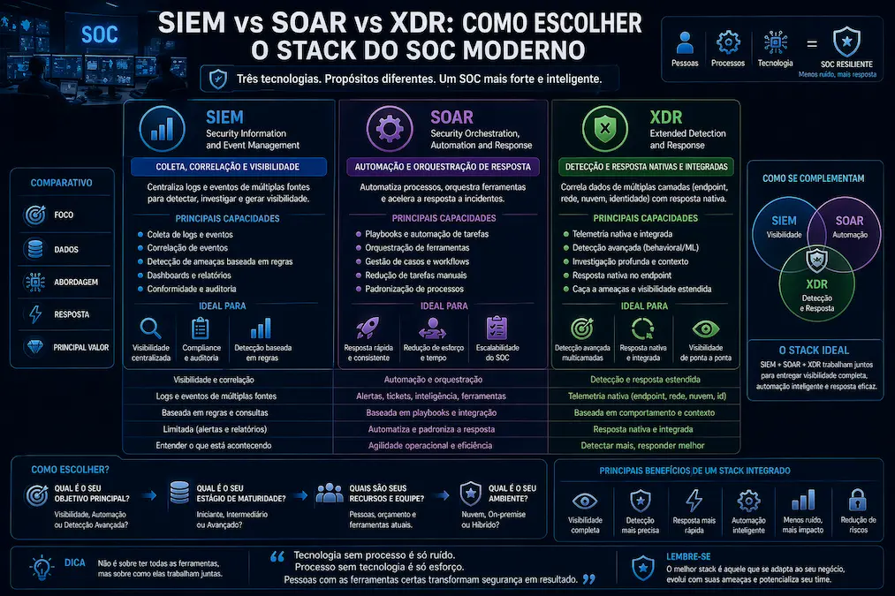

Neste artigo
No atual cenario de ciberseguranca, a escolha entre SIEM, SOAR e XDR e crucial para a protecao das informacoes corporativas. Cada uma dessas solucoes oferece funcionalidades distintas que podem ser integradas para atender as necessidades especificas de seguranca de uma organizacao.
Arquitetura das Solucoes
O SIEM (Security Information and Event Management) foca na coleta e analise de logs de eventos de seguranca, fornecendo uma visao centralizada das atividades dentro da rede. Ele e essencial para correlacionar eventos e detectar anomalias.
O SOAR (Security Orchestration, Automation, and Response) complementa o SIEM ao automatizar respostas a incidentes, permitindo que as equipes de seguranca se concentrem em ameacas mais complexas. Ele integra diferentes ferramentas e processos para uma resposta coordenada.
Por outro lado, o XDR (Extended Detection and Response) expande a capacidade de deteccao e resposta alem dos limites tradicionais, integrando dados de multiplos vetores, incluindo endpoints, redes e servidores, para uma visao unificada da seguranca.
Diferencas Funcionais
As funcionalidades do SIEM incluem a coleta de logs, correlacao de eventos e analise de dados em tempo real. Ele e ideal para organizacoes que precisam de uma visao abrangente dos eventos de seguranca.
O SOAR se destaca por sua capacidade de automatizar e orquestrar respostas a incidentes, reduzindo significativamente o tempo de resposta e permitindo que as equipes de seguranca se concentrem em ameacas mais criticas.
O XDR oferece uma abordagem mais integrada, combinando dados de diferentes fontes para detectar e responder a ameacas de forma mais eficaz. Ele e particularmente util para organizacoes que buscam uma solucao de seguranca mais coesa e abrangente.
Casos de Uso Corporativos
O SIEM e amplamente utilizado em ambientes corporativos que necessitam de conformidade com regulamentos de seguranca, como PCI-DSS e GDPR, devido a sua capacidade de monitorar e relatar eventos de seguranca.
O SOAR e ideal para empresas que buscam melhorar a eficiencia operacional de seus SOCs, automatizando tarefas repetitivas e permitindo que os analistas se concentrem em ameacas mais complexas.
O XDR e adequado para organizacoes que desejam integrar diferentes fontes de dados de seguranca para uma visao mais completa e coesa das ameacas, facilitando a deteccao e resposta a incidentes.
Criterios de Selecao
A selecao entre SIEM, SOAR e XDR deve considerar a maturidade da infraestrutura de seguranca da organizacao. Empresas com processos de seguranca estabelecidos podem se beneficiar mais do SOAR, enquanto aquelas que buscam uma solucao integrada podem optar pelo XDR.
O orcamento tambem desempenha um papel crucial na escolha da solucao. O SIEM pode exigir investimentos significativos em infraestrutura e pessoal, enquanto o SOAR e o XDR podem oferecer economias de custo por meio da automacao e integracao.
Por fim, a complexidade dos dados a serem gerenciados e analisados deve ser considerada. O SIEM e ideal para ambientes com grandes volumes de logs, enquanto o XDR e mais adequado para ambientes que exigem uma visao integrada de multiplos vetores de ameacas.
| Caracteristica | SIEM | SOAR | XDR |
|---|---|---|---|
| Foco | Coleta e analise de logs | Automacao e orquestracao | Integracao e deteccao estendida |
| Funcionalidade | Correlacao de eventos | Resposta automatizada | Visao unificada |
| Casos de Uso | Conformidade | Eficiencia operacional | Visao integrada |
Avaliar a Infraestrutura Atual
Antes de escolher uma solucao, e essencial avaliar a infraestrutura de seguranca existente para identificar lacunas e necessidades especificas.
Definir Objetivos de Seguranca
Estabelecer objetivos claros de seguranca ajuda a determinar qual solucao melhor atende as necessidades da organizacao.
Considerar o Orcamento Disponivel
O orcamento disponivel pode influenciar significativamente a escolha entre SIEM, SOAR e XDR, especialmente em termos de custos de implementacao e manutencao.
Interessado em melhorar a seguranca da sua organizacao? Nossa consultoria pode ajudar a escolher a solucao ideal entre SIEM, SOAR e XDR. Entre em contato conosco para saber mais.
Perguntas Frequentes
O SIEM e uma abordagem para coletar e analisar dados de seguranca de varias fontes dentro de uma infraestrutura de TI.
O SOAR automatiza a resposta a incidentes, permitindo que as equipes aumentem a eficiencia e reduzam o tempo de resposta.
O XDR unifica a visibilidade e resposta em multiplos pontos, oferecendo uma solucao mais integrada em comparacao ao SIEM que se concentra em dados especificos.
As empresas devem ter processos de seguranca estabelecidos e dados com algum nivel de confianca antes de implementar solucoes de SOAR.
Conclusao
A escolha entre SIEM, SOAR e XDR deve ser cuidadosamente considerada com base nas necessidades especificas de seguranca da organizacao. Cada solucao oferece beneficios unicos que podem ser aproveitados para melhorar a postura de seguranca.
Organizacoes devem avaliar sua infraestrutura atual, definir objetivos claros de seguranca e considerar o orcamento disponivel para tomar uma decisao informada. A integracao dessas solucoes pode fornecer uma defesa mais robusta contra ameacas ciberneticas.